Age Pregnancies BMI Glucose
Min. :18.00 Min. : 0.000 Min. :15.00 Min. : 50.0
1st Qu.:36.00 1st Qu.: 4.000 1st Qu.:22.87 1st Qu.: 91.0
Median :53.00 Median : 8.000 Median :27.05 Median :106.0
Mean :53.58 Mean : 7.986 Mean :27.05 Mean :106.1
3rd Qu.:72.00 3rd Qu.:12.000 3rd Qu.:31.18 3rd Qu.:121.0
Max. :89.00 Max. :16.000 Max. :49.66 Max. :207.2
BloodPressure HbA1c LDL HDL
Min. : 60.00 Min. :4.000 Min. :-12.0 Min. : -9.20
1st Qu.: 74.00 1st Qu.:4.300 1st Qu.: 80.1 1st Qu.: 39.70
Median : 84.00 Median :4.600 Median : 99.9 Median : 50.20
Mean : 84.48 Mean :4.651 Mean :100.1 Mean : 49.95
3rd Qu.: 94.00 3rd Qu.:5.000 3rd Qu.:120.2 3rd Qu.: 60.20
Max. :138.00 Max. :6.900 Max. :202.2 Max. :107.80
Triglycerides WaistCircumference HipCircumference WHR
Min. : 50.0 Min. : 40.30 Min. : 54.8 Min. :0.4200
1st Qu.:117.2 1st Qu.: 83.40 1st Qu.: 94.0 1st Qu.:0.8200
Median :150.6 Median : 93.80 Median :103.2 Median :0.9100
Mean :151.1 Mean : 93.95 Mean :103.1 Mean :0.9174
3rd Qu.:185.1 3rd Qu.:104.60 3rd Qu.:112.1 3rd Qu.:1.0100
Max. :345.8 Max. :163.00 Max. :156.6 Max. :1.4900
FamilyHistory DietType Hypertension MedicationUse
Min. :0.0000 Min. :0.0000 Min. :0.000000 Min. :0.000
1st Qu.:0.0000 1st Qu.:0.0000 1st Qu.:0.000000 1st Qu.:0.000
Median :0.0000 Median :0.0000 Median :0.000000 Median :0.000
Mean :0.3025 Mean :0.4862 Mean :0.001048 Mean :0.405
3rd Qu.:1.0000 3rd Qu.:1.0000 3rd Qu.:0.000000 3rd Qu.:1.000
Max. :1.0000 Max. :2.0000 Max. :1.000000 Max. :1.000
Outcome
Min. :0.0000
1st Qu.:0.0000
Median :0.0000
Mean :0.3441
3rd Qu.:1.0000
Max. :1.0000
# In reality, LDL and HDL must larger than 0.# mutate categorical variables to factordiabetes_clean <- diabetes %>%filter(LDL>0, HDL>0) %>%mutate(Outcome =factor(Outcome, levels=c(0,1), labels=c("No Diabetes","Diabetes")),FamilyHistory =factor(FamilyHistory, levels=c(0,1), labels=c("No Diabetes History","Has Diabetes History")),DietType =factor(DietType, levels=c(0,1,2), labels=c("Unbalanced", "Balanced", "Vegan")),Hypertension =factor(Hypertension, levels=c(0,1), labels=c("No Hypertension","Hypertension")),MedicationUse =factor(MedicationUse, levels=c(0,1), labels=c("Not Taking Medicine","Taking Medicine")))summary(diabetes_clean)
Age Pregnancies BMI Glucose
Min. :18.00 Min. : 0.000 Min. :15.00 Min. : 50.0
1st Qu.:36.00 1st Qu.: 4.000 1st Qu.:22.88 1st Qu.: 91.0
Median :53.00 Median : 8.000 Median :27.05 Median :106.0
Mean :53.56 Mean : 7.987 Mean :27.05 Mean :106.1
3rd Qu.:72.00 3rd Qu.:12.000 3rd Qu.:31.18 3rd Qu.:121.0
Max. :89.00 Max. :16.000 Max. :49.66 Max. :207.2
BloodPressure HbA1c LDL HDL
Min. : 60.00 Min. :4.000 Min. : 0.3 Min. : 0.60
1st Qu.: 74.00 1st Qu.:4.300 1st Qu.: 80.1 1st Qu.: 39.70
Median : 84.00 Median :4.600 Median : 99.9 Median : 50.20
Mean : 84.48 Mean :4.651 Mean :100.2 Mean : 49.99
3rd Qu.: 94.00 3rd Qu.:5.000 3rd Qu.:120.2 3rd Qu.: 60.20
Max. :138.00 Max. :6.900 Max. :202.2 Max. :107.80
Triglycerides WaistCircumference HipCircumference WHR
Min. : 50.0 Min. : 40.30 Min. : 54.8 Min. :0.4200
1st Qu.:117.2 1st Qu.: 83.40 1st Qu.: 94.0 1st Qu.:0.8200
Median :150.6 Median : 93.80 Median :103.2 Median :0.9100
Mean :151.2 Mean : 93.95 Mean :103.1 Mean :0.9174
3rd Qu.:185.1 3rd Qu.:104.60 3rd Qu.:112.1 3rd Qu.:1.0100
Max. :345.8 Max. :163.00 Max. :156.6 Max. :1.4900
FamilyHistory DietType Hypertension
No Diabetes History :6643 Unbalanced:5787 No Hypertension:9516
Has Diabetes History:2883 Balanced :2846 Hypertension : 10
Vegan : 893
MedicationUse Outcome
Not Taking Medicine:5671 No Diabetes:6246
Taking Medicine :3855 Diabetes :3280
EDA
Heatmap (Correlation between some covariates)
# The correlation of BMI, WaistCircumference, HipCircumference and WHR (All of them are obesity indicators).# The correlation of Glucose and HbA1c (Both of them are sugar blood indicators).cor_obesity <- diabetes_clean %>%select(BMI, WaistCircumference, HipCircumference, WHR)cor_sugar <- diabetes_clean %>%select(Glucose, HbA1c)corrplot(cor(cor_obesity), method ="color", addCoef.col ="white")title("Figure 1: Correlation Matrix of BMI, WaistCircumference, HipCircumference and WHR", cex.main =0.9)
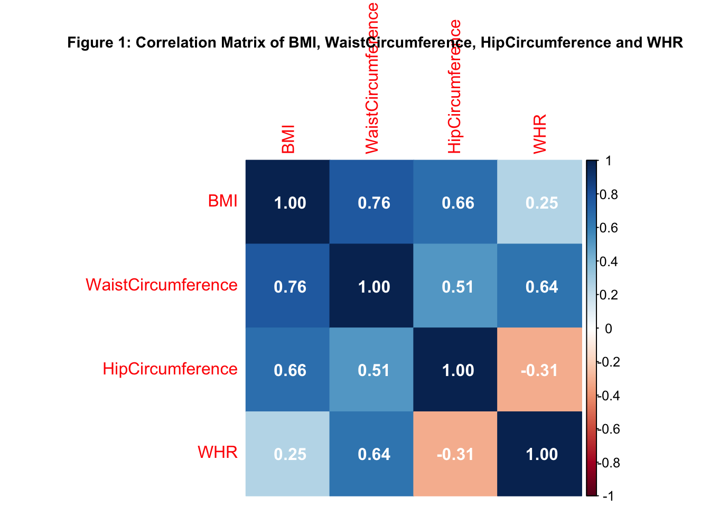
corrplot(cor(cor_sugar), method ="color", addCoef.col ="white")title("Figure 2: Correlation Matrix of Glucose and HbA1c", cex.main =0.9)
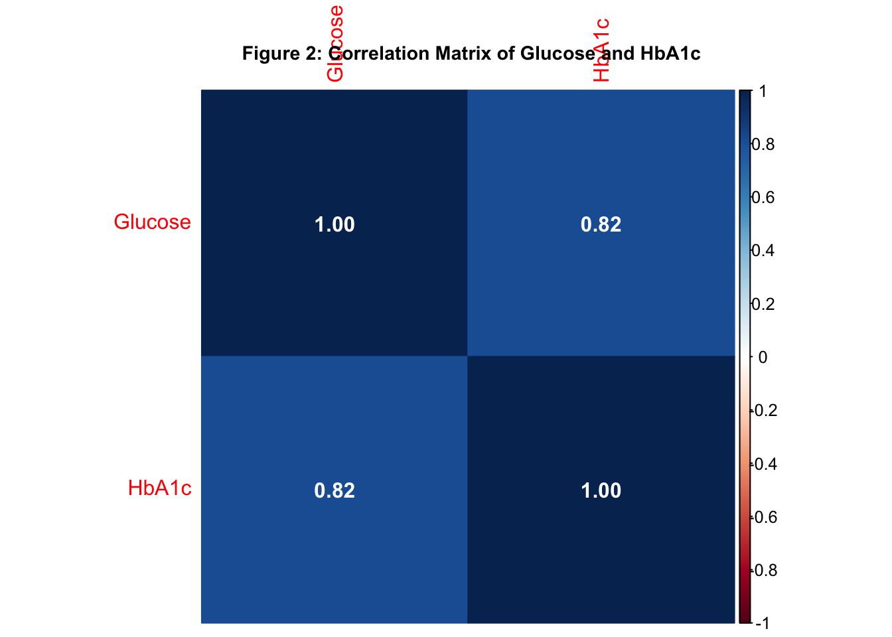
# drop WaistCircumference, HipCircumference and Glucosediabetes_selected <- diabetes_clean %>%select(-WaistCircumference, -HipCircumference, -Glucose)
Covariate
# boxplots for response and continuous covariate# boxplot between Age and Outcomeboxplot(Age ~ Outcome,data = diabetes_selected,main ="Figure 3: Age by Diabetes Status",xlab ="Diabetes",ylab ="Age",col =c("lightblue", "salmon"))
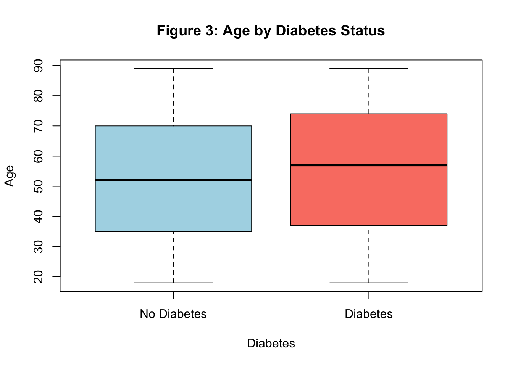
# boxplot between Pregnancies and Outcomeboxplot(Pregnancies ~ Outcome,data = diabetes_selected,main ="Figure 4: Pregnancies by Diabetes Status",xlab ="Diabetes",ylab ="The number of pregnant times",col =c("lightblue", "salmon"))
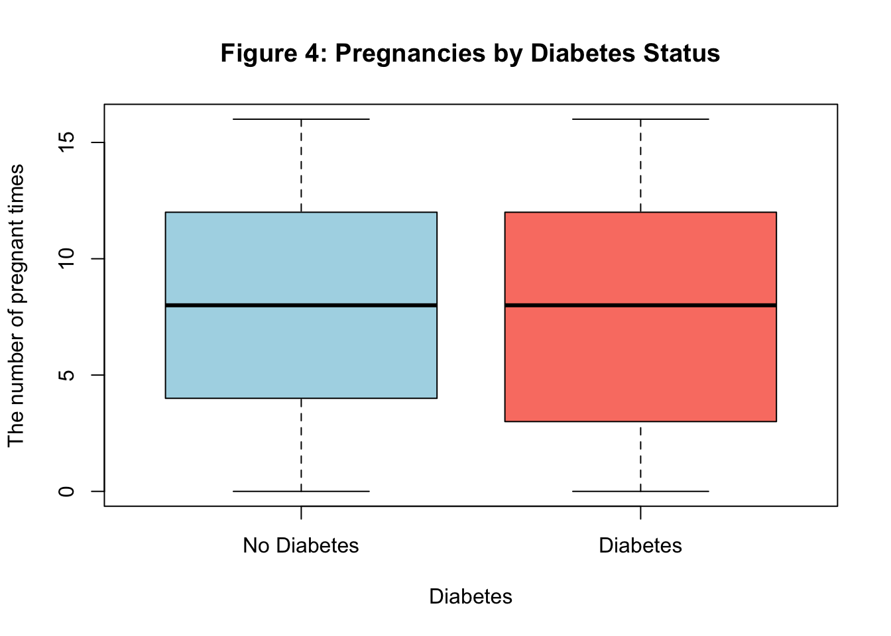
# boxplot between BMI and Outcomeboxplot(BMI ~ Outcome,data = diabetes_selected,main ="Figure 5: BMI by Diabetes Status",xlab ="Diabetes",ylab ="Body Mass Index (kg/m²)",col =c("lightblue", "salmon"))
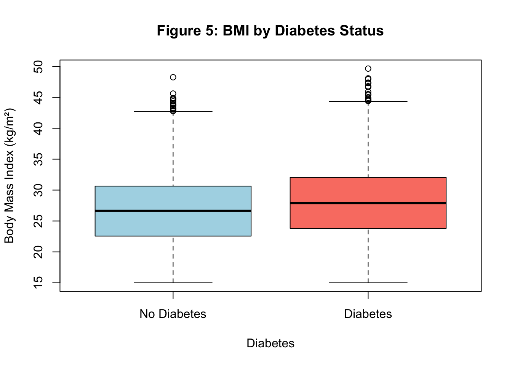
# boxplot between BloodPressure and Outcomeboxplot(BloodPressure ~ Outcome,data = diabetes_selected,main ="Figure 6: BloodPressure by Diabetes Status",xlab ="Diabetes",ylab ="Systolic blood pressure (mmHg)",col =c("lightblue", "salmon"))
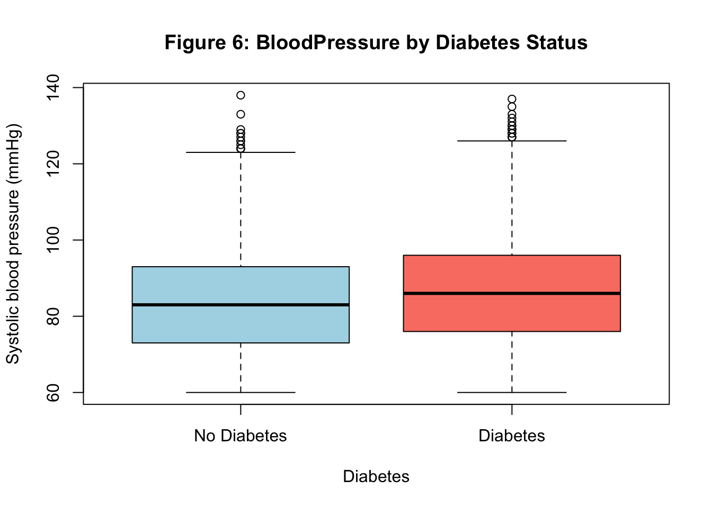
# boxplot between HbA1c and Outcomeboxplot(HbA1c ~ Outcome,data = diabetes_selected,main ="Figure 7: HbA1c Level by Diabetes Status",xlab ="Diabetes",ylab ="HbA1c Level (%)",col =c("lightblue", "salmon"))
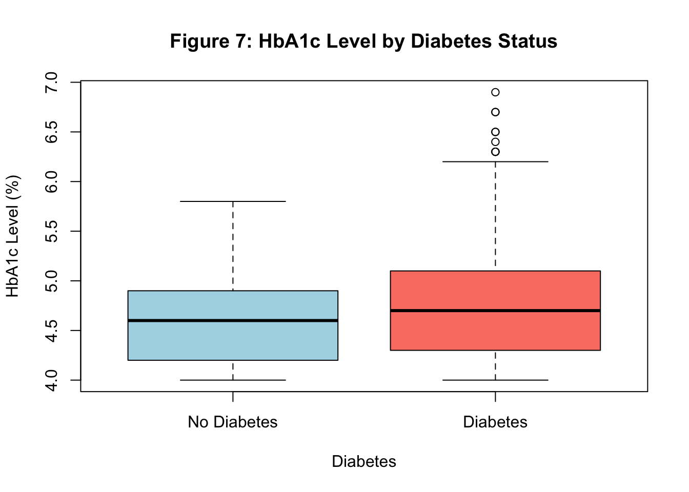
# boxplot between LDL and Outcomeboxplot(LDL ~ Outcome,data = diabetes_selected,main ="Figure 8: LDL by Diabetes Status",xlab ="Diabetes",ylab ="Low-Density Lipoprotein (mg/dL)",col =c("lightblue", "salmon"))
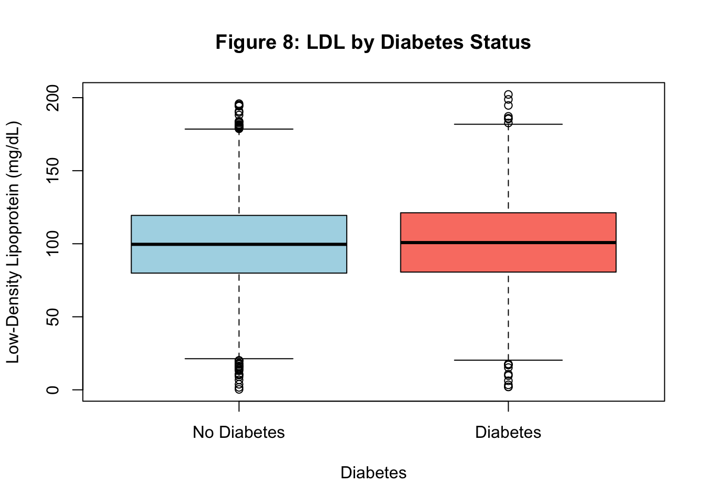
# boxplot between HDL and Outcomeboxplot(HDL ~ Outcome,data = diabetes_selected,main ="Figure 9: HDL by Diabetes Status",xlab ="Diabetes",ylab ="High-Density Lipoprotein (mg/dL)",col =c("lightblue", "salmon"))
# boxplot between Triglycerides and Outcomeboxplot(Triglycerides ~ Outcome,data = diabetes_selected,main ="Figure 10: Triglycerides by Diabetes Status",xlab ="Diabetes",ylab ="Fat levels in the blood (mg/dL)",col =c("lightblue", "salmon"))
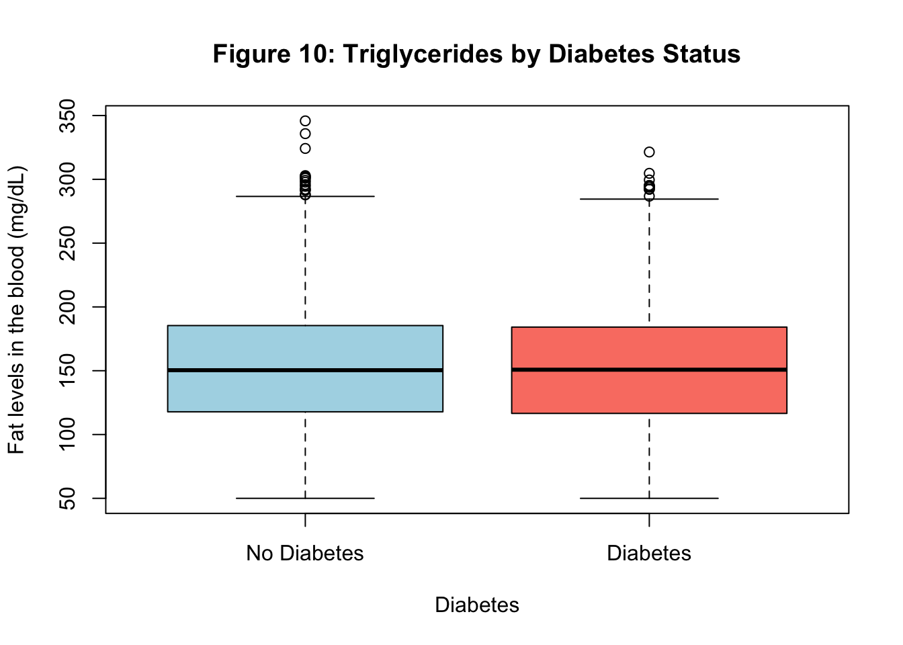
# boxplot between WHR and Outcomeboxplot(WHR ~ Outcome,data = diabetes_selected,main ="Figure 11: WHR by Diabetes Status",xlab ="Diabetes",ylab ="Waist circumference divided by hip circumference",col =c("lightblue", "salmon"))
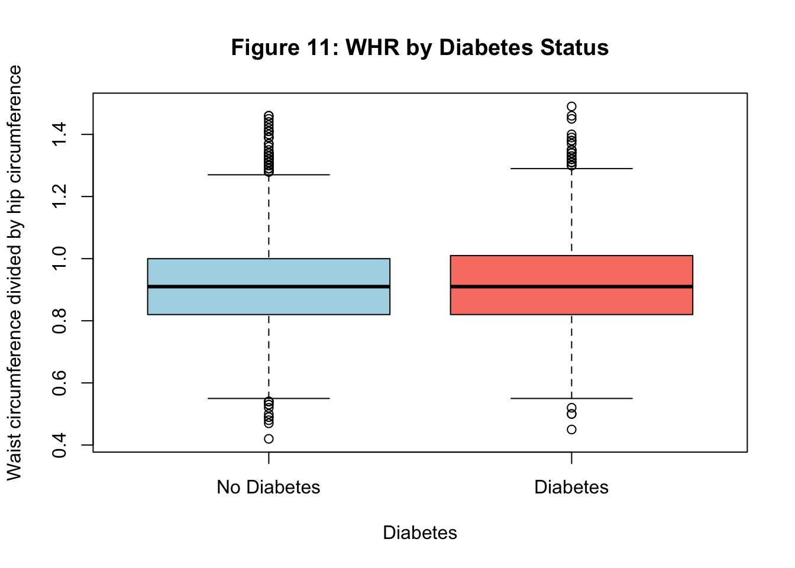
# Log transformation to BMI, BloodPressure, Hb1Ac (reduce outlier)diabetes_scaled <- diabetes_selected %>%mutate(BMI =log(BMI), BloodPressure =log(BloodPressure), HbA1c =log(HbA1c))# boxplot between log(BMI) and Outcomeboxplot(BMI ~ Outcome,data = diabetes_scaled,main ="Figure 12: log(BMI) by Diabetes Status",xlab ="Diabetes",ylab ="Log Transformation of Body Mass Index (kg/m²)",col =c("lightblue", "salmon"))
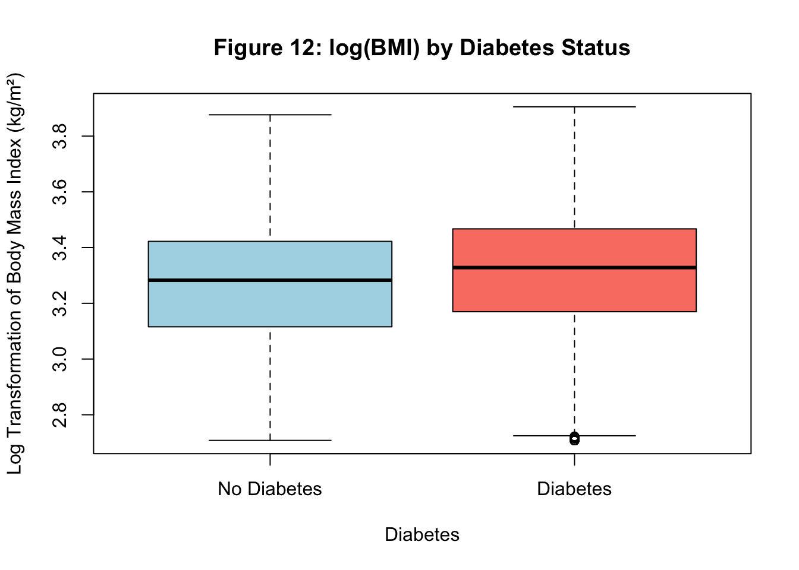
# boxplot between log(BloodPressure) and Outcomeboxplot(BloodPressure ~ Outcome,data = diabetes_scaled,main ="Figure 13: log(BloodPressure) by Diabetes Status",xlab ="Diabetes",ylab ="Log Transformation of Systolic blood pressure (mmHg)",col =c("lightblue", "salmon"))
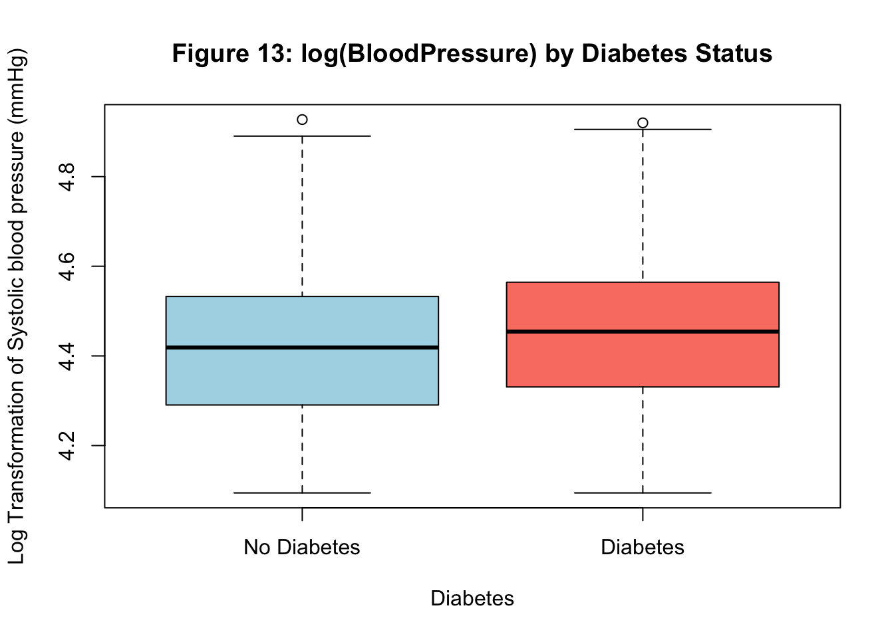
# boxplot between log(HbA1c) and Outcomeboxplot(HbA1c ~ Outcome,data = diabetes_scaled,main ="Figure 14: log(HbA1c Level) by Diabetes Status",xlab ="Diabetes",ylab ="Log Transformation of HbA1c Level (%)",col =c("lightblue", "salmon"))
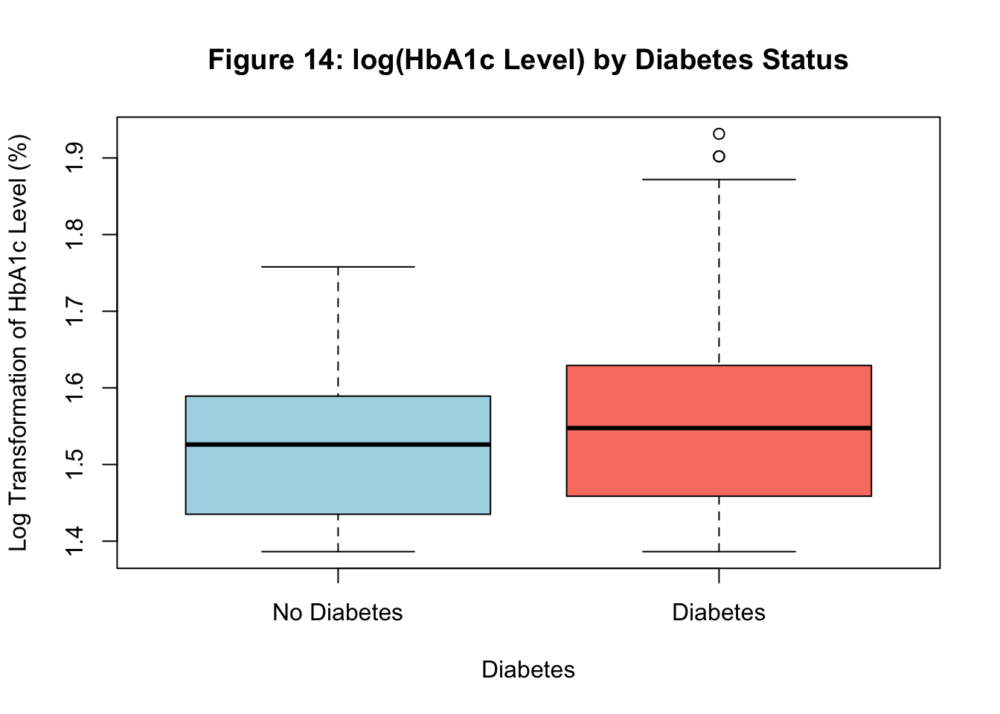
# contingency tables for response and categorical covariate# contingency table for Outcome and FamilyHistorytable(diabetes_scaled$Outcome, diabetes_scaled$FamilyHistory)
No Diabetes History Has Diabetes History
No Diabetes 6246 0
Diabetes 397 2883
print("Tabel 1: Contingency Table of Outcome and FamilyHistory")
[1] "Tabel 1: Contingency Table of Outcome and FamilyHistory"
# contingency table for Outcome and DietTypetable(diabetes_scaled$Outcome, diabetes_scaled$DietType)
print("Tabel 2: Contingency Table of Outcome and DietType")
[1] "Tabel 2: Contingency Table of Outcome and DietType"
# contingency table for Outcome and Hypertensiontable(diabetes_scaled$Outcome, diabetes_scaled$Hypertension)
No Hypertension Hypertension
No Diabetes 6244 2
Diabetes 3272 8
print("Tabel 3: Contingency Table of Outcome and Hypertension")
[1] "Tabel 3: Contingency Table of Outcome and Hypertension"
# contingency table for Outcome and MedicationUsetable(diabetes_scaled$Outcome, diabetes_scaled$MedicationUse)
Not Taking Medicine Taking Medicine
No Diabetes 3864 2382
Diabetes 1807 1473
print("Tabel 4: Contingency Table of Outcome and MedicationUse")
[1] "Tabel 4: Contingency Table of Outcome and MedicationUse"
# Drop Pregnancies, LDL, HDL, Triglycerides, WHR (nearly no difference), Hypertension (imbalance) and MedicationUse.diabetes_selected_eda <- diabetes_scaled %>%select(-Pregnancies, -LDL, -HDL, -Triglycerides, -WHR, -Hypertension, -MedicationUse)summary(diabetes_selected_eda)
Age BMI BloodPressure HbA1c
Min. :18.00 Min. :2.708 Min. :4.094 Min. :1.386
1st Qu.:36.00 1st Qu.:3.130 1st Qu.:4.304 1st Qu.:1.459
Median :53.00 Median :3.298 Median :4.431 Median :1.526
Mean :53.56 Mean :3.273 Mean :4.422 Mean :1.532
3rd Qu.:72.00 3rd Qu.:3.440 3rd Qu.:4.543 3rd Qu.:1.609
Max. :89.00 Max. :3.905 Max. :4.927 Max. :1.932
FamilyHistory DietType Outcome
No Diabetes History :6643 Unbalanced:5787 No Diabetes:6246
Has Diabetes History:2883 Balanced :2846 Diabetes :3280
Vegan : 893
Statistical Analysis
Assumption
# fit full model and check VIF full_model <-glm(Outcome ~ ., data = diabetes_selected_eda, family = binomial)vif(full_model)
# use Cook's distance to find if there is influential point for full modelcooks_rule_of_thumb <-cooks.distance(full_model)plot(cooks_rule_of_thumb, xlab="Individual i", ylab="Cook's Distance")abline(h=1, lty=2, col="red")title("Figure 15: Cook's Distance for rule-of-thumb (>1)")
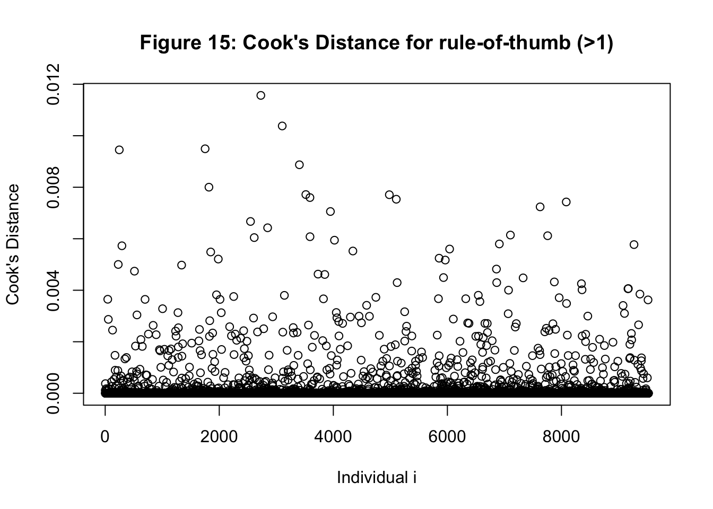
Model Selection
# apply backward method (based on AIc)summary(step(full_model))
Call:
glm(formula = Outcome ~ Age + BMI + HbA1c + FamilyHistory, family = binomial,
data = diabetes_selected_eda)
Coefficients:
Estimate Std. Error z value Pr(>|z|)
(Intercept) -65.345361 2.830783 -23.084 <2e-16 ***
Age 0.045101 0.004765 9.465 <2e-16 ***
BMI 5.182670 0.500767 10.349 <2e-16 ***
HbA1c 25.738070 1.331783 19.326 <2e-16 ***
FamilyHistoryHas Diabetes History 31.830442 414.543323 0.077 0.939
---
Signif. codes: 0 '***' 0.001 '**' 0.01 '*' 0.05 '.' 0.1 ' ' 1
(Dispersion parameter for binomial family taken to be 1)
Null deviance: 12266.8 on 9525 degrees of freedom
Residual deviance: 1341.5 on 9521 degrees of freedom
AIC: 1351.5
Number of Fisher Scoring iterations: 20
# model selected by backward methodbackward_selected_model <-glm(formula = Outcome ~ Age + BMI + HbA1c + FamilyHistory, data = diabetes_selected_eda, family = binomial)summary(backward_selected_model)
Call:
glm(formula = Outcome ~ Age + BMI + HbA1c + FamilyHistory, family = binomial,
data = diabetes_selected_eda)
Coefficients:
Estimate Std. Error z value Pr(>|z|)
(Intercept) -65.345361 2.830783 -23.084 <2e-16 ***
Age 0.045101 0.004765 9.465 <2e-16 ***
BMI 5.182670 0.500767 10.349 <2e-16 ***
HbA1c 25.738070 1.331783 19.326 <2e-16 ***
FamilyHistoryHas Diabetes History 31.830442 414.543323 0.077 0.939
---
Signif. codes: 0 '***' 0.001 '**' 0.01 '*' 0.05 '.' 0.1 ' ' 1
(Dispersion parameter for binomial family taken to be 1)
Null deviance: 12266.8 on 9525 degrees of freedom
Residual deviance: 1341.5 on 9521 degrees of freedom
AIC: 1351.5
Number of Fisher Scoring iterations: 20
# use Cook's distance to find if there is influential point for selected modelcooks_selected_model <-cooks.distance(backward_selected_model)plot(cooks_selected_model, xlab="Individual i", ylab="Cook's Distance")abline(h=1, lty=2, col="red")title("Figure 16: Cook's Distance for Backward Selected Model")